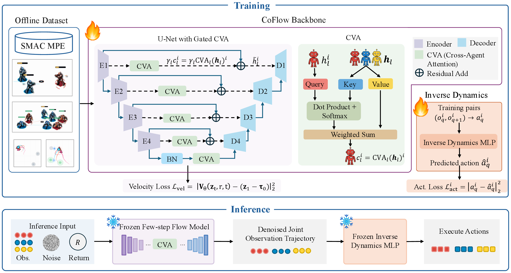

CoFlow directly learns a joint averaged-velocity field for fast, cooperative trajectory generation in offline multi-agent reinforcement learning.
Model: Joint Generation
The model predicts the displacement of all agents’ observation trajectories over a flow-time interval. One or a few joint updates generate trajectories without teacher–student distillation.
Cooperation: CVA
Coordinated Velocity Attention (CVA) incorporates teammate trajectory features into each agent’s velocity prediction, modeling cross-agent dependencies within each network evaluation.
Training: Lower Cost
A finite-difference correction approximates the consistency relation between averaged and instantaneous velocities. The base prediction receives gradients; the correction is detached, reducing consistency-training time and peak memory.

Inference and execution
A shared inverse-dynamics model converts generated observation transitions into actions. CoFlow supports centralized and decentralized execution. The experiments cover 48 configurations across MPE and SMAC.
Three contributions
- Joint few-step generation: direct averaged-velocity learning without distillation.
- Cross-agent cooperation modeling: teammate information enters each prediction through CVA.
- Efficient consistency training: finite differences reduce the training cost of this joint model.